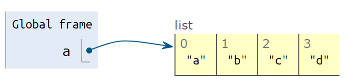

5 常用数据结构
数据结构：是计算机中存储、组织数据的方式。（几乎是废话）
例如“新华字典”：
- 数据就是每一个字的解释
- 组织方式是按拼音，顺序排列
- 一个索引（目录），以供你查找数据。
Python中的Dict与之类似，后面详细解释。
5.1 列表List
一个列表List，就是把几个元素(items)，用一个固定的顺序连在一起的数据结构。列表List是一个重点，超级常用，内容比较多。
5.1.1 列表的创建
创建一个列表，可以用中括号[]，其中每一个元素用逗号分开。
为了好看，建议每个逗号后加一个空格。
#%% 列表List
numbers = [1, 2, 3, 4, 5, 6]
letters = ["a", "b", "c", "d"]
print(numbers)## [1, 2, 3, 4, 5, 6]print(letters)## ['a', 'b', 'c', 'd']列表中的元素，可以混合多种类型。但一般不建议这么做。
a_list = [1, 2, 3, "a", "b", "c"]
print(a_list)## [1, 2, 3, 'a', 'b', 'c']我们还可以创建空List。比如，当列表的第一个元素还没确定，而你要先行创建列表，然后再生成元素添加进去。
#%% 空列表
empty_list = []
empty_list = list()
print(empty_list)## []对一个字符串String 使用list()函数，可以把字符串分解成字母组成的List。这本质上就是类型转换：用类型的名字做转换函数的名字。
如果把函数名list看成是一个动词，或者可以解释成：list a string。
#%%
print(list('apple'))## ['a', 'p', 'p', 'l', 'e']注意：实际上，list()可以用于所有类型的序列（有序列结构的其他数据），以后我们遇到回说。
特别地，如果我们转换一个多行的字符串，会发现什么？
a = '''hello
python
'''
print(list(a))## ['h', 'e', 'l', 'l', 'o', '\n', 'p', 'y', 't', 'h', 'o', 'n', '\n']注意，换行符\n也出现在其中。实际上，应该把换行符之类的不可见字符也看成一个真正的字符，实际上存在，但部分情况不可见而已
5.1.2 列表的元素
要引用一个列表的元素，也使用[]，其中包括元素的索引(index)，注意第一个元素的索引是0（Python和c语言一样，从0开始计数）
print(numbers)## [1, 2, 3, 4, 5, 6]print(numbers[0])## 1print(numbers[3])## 4可以反向引用元素，例如-1指向最后一个元素，-2指向倒数第二个，如此类推
print(numbers)## [1, 2, 3, 4, 5, 6]print(numbers[-1])## 6print(numbers[-2])## 5列表中的元素是可变的。同样，用等号=对某个元素赋值即可
print(numbers)## [1, 2, 3, 4, 5, 6]numbers[0] = 999 # 修改第一个元素的值为999
print(numbers)## [999, 2, 3, 4, 5, 6]添加元素
在List的最后添加元素可以用.append()。添加多个元素，可以用.extend()，注意extend使用一个list作为参数。插入元素到指定索引号.insert()
letters = list("abcd")
print(letters)## ['a', 'b', 'c', 'd']letters.append('e')# 添加一个元素
print(letters)## ['a', 'b', 'c', 'd', 'e']letters.extend(['f','g']) #添加多个元素：把要添加的元素放进一个list里
print(letters)## ['a', 'b', 'c', 'd', 'e', 'f', 'g']letters.insert(3,"apple") #元素插入到指定索引的位置
print(letters)## ['a', 'b', 'c', 'apple', 'd', 'e', 'f', 'g']移除：移除某个元素，使用.remove()；按照索引移除del
print(letters)## ['a', 'b', 'c', 'apple', 'd', 'e', 'f', 'g']letters.remove('apple') # 如果'apple'不存在，会抛出错误：ValueError: list.remove(x): x not in list
print(letters)## ['a', 'b', 'c', 'd', 'e', 'f', 'g']del letters[0]
print(letters)## ['b', 'c', 'd', 'e', 'f', 'g']5.1.3 注意：List的拷贝
这部分可能有点抽象。
- 变量名是个标签
- 变量赋值，给内存中的一个数据“贴标签”
- 那用一个变量，给另一个变量赋值会如何？
以一个数字来举例
a = 123
print(a)## 123b = a
print(b)## 123a = 321
print(f'a is {a}\nb is {b}')## a is 321
## b is 123中间发生了什么
a = 123
创建了一个整型对象，里面存放了123，把a这个名字绑定到这个对象上。
b = a
把a这个标签，所指代的对象，再贴一个标签b。这个时候,a和b都指向这个整型对象，里面存放了123。
a = 321创建了一个新的整型对象，里面存放了321，把a这个名字，重新绑定到这个对象上。
现在 a -> 321，b -> 123
但List比较特殊
以letters来举例：
a = ["a", "b", "c", "d"]
print('a is ', a)## a is ['a', 'b', 'c', 'd']- 变量
a指向["a", "b", "c", "d"]

b = a 
- 变量
b指向a相同的数据["a", "b", "c", "d"]
a[0] = 'apple'
print('b is ', b)## b is ['apple', 'b', 'c', 'd']- 你修改了列表
a的值，b的值也改变了！因为a和b一直指向同一个对象。

- 如果要避免这种情况，要明确地把
a复制一次，
a = ["a", "b", "c", "d"]
b = a.copy()
print(f'a is {a}\nb is {b}')## a is ['a', 'b', 'c', 'd']
## b is ['a', 'b', 'c', 'd']
a[0] = 'apple'
print(f'a is {a}\nb is {b}')## a is ['apple', 'b', 'c', 'd']
## b is ['a', 'b', 'c', 'd']这样就不会互相干扰了。
总结：
- Number ,String,Tuple等，是“不可变类型”：修改这个变量，会创建一个对象，然后重绑定（转贴标签）
- List等，是“可变类型”：修改里面的值，其实是“原地修改”，导致所有指向这个数据的变量都发生改变。
- 要避免上述情况，请明确地复制原List一次。
5.1.4 List的切片
如何获取一个List中的一段？
a = list('abcdef')
print(a)## ['a', 'b', 'c', 'd', 'e', 'f']截取：从第2个元素开始到第4个元素：（证券答案应该是['b', 'c', 'd']
a[起点的索引 : 终点的索引-1]
如：
a[1:4]：切片起止点：包含起点（1号，即b），不包含终点（不含4号，即e）
print(a[1:4])## ['b', 'c', 'd']可以不写起点或者终点，默认是到一边的尽头
print(a[:4]) # 4号元素之前（0，1，2，3）（不包含终点）## ['a', 'b', 'c', 'd']print(a[3:]) # 3号元素以及之后（3，4，5）（包含起点）## ['d', 'e', 'f']可以倒数切片：
如从倒数第二个元素开始到最后
print(a[-2:]) # 倒数第二个元素开始到最后（包含起点）## ['e', 'f']从头切到倒数第二个元素（不含终点）
print(a[:-2]) # 从头切到倒数第二个元素（不含终点）## ['a', 'b', 'c', 'd']切片赋值 ： 直接覆盖原理位置的值，可以不等长
a = list('abcdef')
print(a[2:4])## ['c', 'd']注意：a[2:4]只有2个值，但我们替换成不等长的其他List，如替换3个值进去
a[2:4] = ['x','y','z']
print(a)## ['a', 'b', 'x', 'y', 'z', 'e', 'f']这使得['c', 'd'] -> ['x', 'y', 'z']
赋予空列表，可以达到删除的效果。
a[2:5] = [] # x,y,z是2，3，4号
print(a)## ['a', 'b', 'e', 'f']还可以按步长切片
a[起点:终点:步长]
步长默认为1（每个元素都取值），如果设置为2，每2个元素取一个值
a = list('abcdefgh')
print(f'''a is {a}
a[1:6] is {a[1:6]}
a[1:6:2] is {a[1:6:2]}
''')## a is ['a', 'b', 'c', 'd', 'e', 'f', 'g', 'h']
## a[1:6] is ['b', 'c', 'd', 'e', 'f']
## a[1:6:2] is ['b', 'd', 'f']